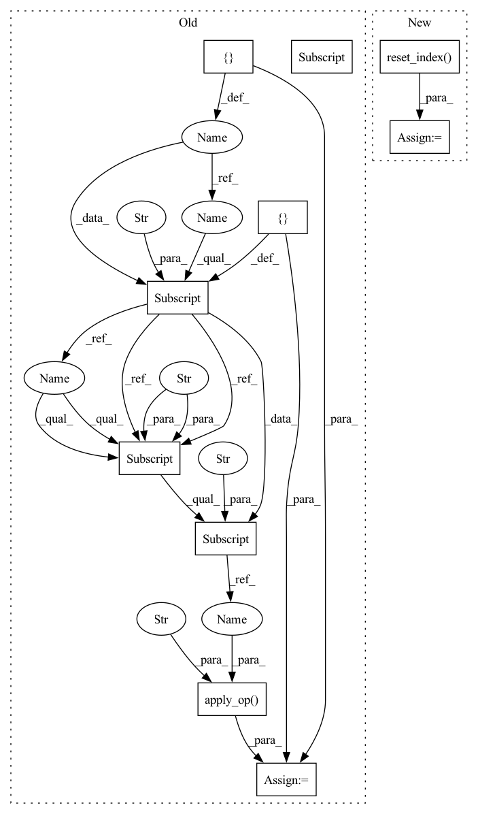

Pattern ID :8984

Before Change
op = nvt.ops.FillMissing(42)
cont_names = ["x", "y"]
columns_ctx = {}
columns_ctx["continuous"] = {}
columns_ctx["continuous"]["base"] = cont_names
for col in cont_names:
idx = np.random.choice(df.shape[0] - 1, int(df.shape[0] * 0.2))
df[col].iloc[idx] = None
transformed = cudf.concat([op.apply_op(df, columns_ctx, "continuous")])
assert_eq(transformed[cont_names], df[cont_names].fillna(42))
After Change
idx = np.random.choice(df.shape[0] - 1, int(df.shape[0] * 0.2))
df[col].iloc[idx] = None
df = df.reset_index()
dataset = nvt.Dataset(df)
processor = nvt.Workflow(cont_features)
processor.fit(dataset)
new_gdf = processor.transform(dataset).to_ddf().compute()
for col in cont_names:
assert np.all((df[col].fillna(42) - new_gdf[col]).abs().values <= 1e-2)
assert new_gdf[col].isna().sum() == 0
In pattern: SUPERPATTERN
Frequency: 3
Non-data size: 10
Instances
Fragment ID: 32781968
Project Name: nvidia/nvtabular
Commit Name: 4c92dffac4354d816178264bcfcdec722db2ec1c
Time: 2021-01-05
Author: github@benfrederickson.com
File Name: tests/unit/test_ops.py
M Class Name: AnonimousClass
N Class Name: AnonimousClass
M Method Name: test_fill_missing(4)
N Method Name: test_fill_missing(4)
M Parent Class:
N Parent Class:
M File Name: tests/unit/test_ops.py
N File Name: tests/unit/test_ops.py
M Start Line: 385
M End Line: 396
N Start Line: 207
N End Line: 223
'>
Before Change
drop_duplicates_ext=drop_duplicates,
)
columns = mycols_pq if engine == "parquet" else mycols_csv
columns_ctx = {}
columns_ctx["all"] = {}
columns_ctx["all"]["base"] = columns
// Iterate, apply op, and check result
for gdf in dataset.to_iter():
new_gdf = merge_op.apply_op(gdf, columns_ctx, "all")
check_gdf = gdf.merge(df_ext_check, how=how, on=on)
assert len(check_gdf) == len(new_gdf)
assert (new_gdf["id"] + shift).all() == new_gdf["new_col"].all()
assert gdf["id"].all() == new_gdf["id"].all()
After Change
dataset = nvt.Dataset(gdf)
processor = nvt.Workflow(joined)
processor.fit(dataset)
new_gdf = processor.transform(dataset).to_ddf().compute().reset_index()
check_gdf = gdf.merge(df_ext_check, how=how, on=on)
assert len(check_gdf) == len(new_gdf)
assert (new_gdf["id"] + shift).all() == new_gdf["new_col"].all()
'>
Fragment ID: 32781970
Project Name: nvidia/nvtabular
Commit Name: 4c92dffac4354d816178264bcfcdec722db2ec1c
Time: 2021-01-05
Author: github@benfrederickson.com
File Name: tests/unit/test_ops.py
M Class Name: AnonimousClass
N Class Name: AnonimousClass
M Method Name: test_join_external(8)
N Method Name: test_join_external(8)
M Parent Class:
N Parent Class:
M File Name: tests/unit/test_ops.py
N File Name: tests/unit/test_ops.py
M Start Line: 944
M End Line: 988
N Start Line: 548
N End Line: 590
'>
Before Change
cont_names = ["x", "y"]
columns = mycols_pq if engine == "parquet" else mycols_csv
columns_ctx = {}
columns_ctx["all"] = {}
columns_ctx["all"]["base"] = columns
filter_op = ops.Filter(f=lambda df: df[df["y"] > 0.5])
new_gdf = filter_op.apply_op(df, columns_ctx, "all", target_cols=columns)
assert new_gdf.columns.all() == df.columns.all()
// return isnull() rows
columns_ctx["continuous"] = {}
After Change
processor = nvtabular.Workflow(filtered)
processor.fit(dataset)
new_gdf = processor.transform(dataset).to_ddf().compute().reset_index()
filter_df = df[df["y"] > 0.5].reset_index()
for col in cont_names:
assert np.all((new_gdf[col] - filter_df[col]).abs().values <= 1e-2)
// return isnull() rows
'>
Fragment ID: 32781966
Project Name: nvidia/nvtabular
Commit Name: 4c92dffac4354d816178264bcfcdec722db2ec1c
Time: 2021-01-05
Author: github@benfrederickson.com
File Name: tests/unit/test_ops.py
M Class Name: AnonimousClass
N Class Name: AnonimousClass
M Method Name: test_filter(5)
N Method Name: test_filter(6)
M Parent Class:
N Parent Class:
M File Name: tests/unit/test_ops.py
N File Name: tests/unit/test_ops.py
M Start Line: 991
M End Line: 1027
N Start Line: 596
N End Line: 629